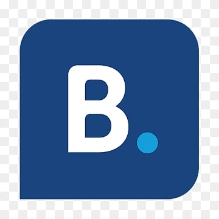

Manual Testing —Of Booking.com Feature
Requirements analysis for some of there features, booking flow test cases, and a report for critical scenarios.
Software Testing Engineer
I test software with a user-first mindset and turn requirements into measurable test scenarios. Interested in automation and user experience quality.
See My WorkSoftware Testing Engineer focused on quality assurance through effective test case design, accurate documentation, and close collaboration with development teams. I’m especially interested in web testing, requirements analysis, and user experience.
Requirements analysis for some of there features, booking flow test cases, and a report for critical scenarios.
Requirements analysis for some of there features, booking flow test cases, and a report for critical scenarios.
UVM environment to verify digital peripherals with functional coverage and reporting.
Open to opportunities and collaborations. Reach out via WhatsApp, LinkedIn, or Email.